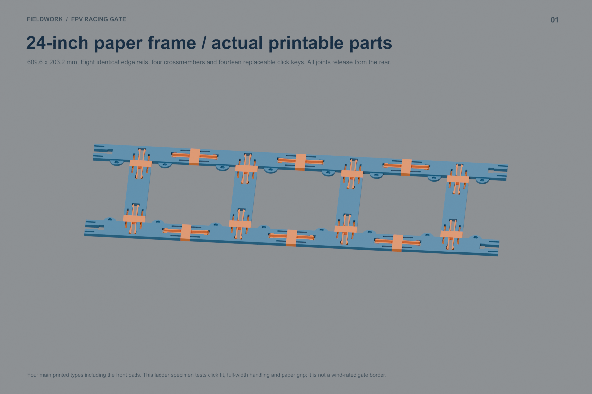
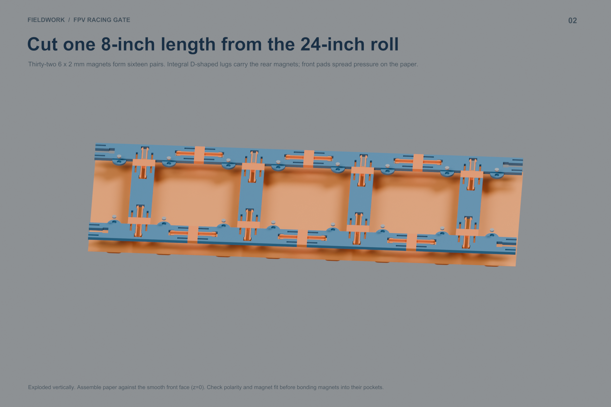
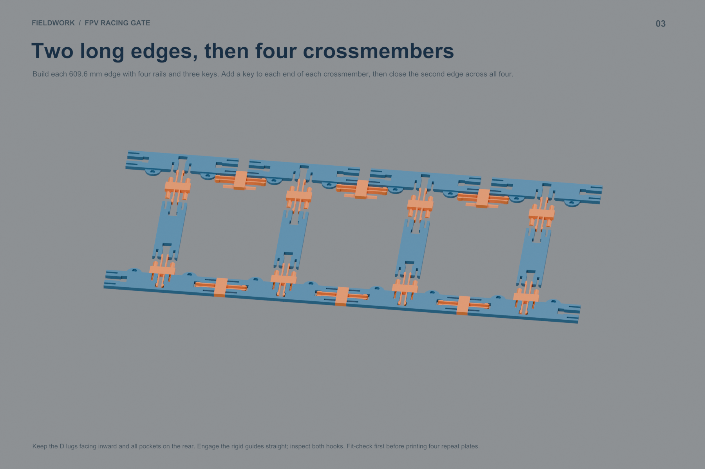
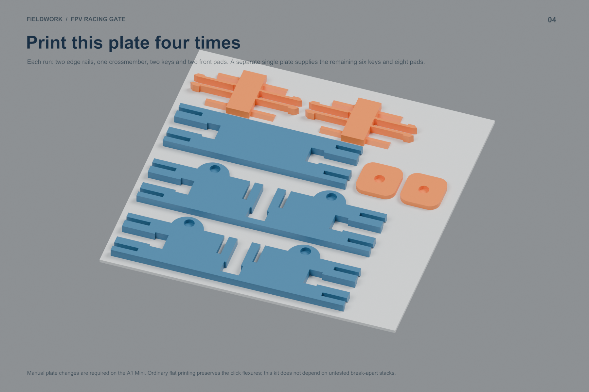

Four main part types, 42 pieces. Click joints connect the long edges and crossmembers. Integral D-shaped holders and removable pads sandwich the paper using 32 magnets.
Blender assembly · Print queue and assembly PDF · Detailed instructions · Download kit
| Sliced A1 Mini / PETG plate | Runs | PETG/run | Time/run |
|---|---|---|---|
| 00_FIT_CHECK | 1 | 16.0 g | 47 min |
| 01_FRAME_REPEAT_4_TIMES | 4 | 45.2 g | 118 min |
| 02_KEYS_AND_PADS_ONCE | 1 | 30.4 g | 92 min |
Five frame plate runs: 211.3 g, about 9 h 24 min. Including the fit check: 227.3 g, about 10 h 12 min. Manual plate clearing is required between runs; no job has been sent.




Exact quantities · Digital checks. 0.4 mm nozzle, 0.2 mm layers, Generic PETG, textured PEI, 3 walls, 15% infill, supports off. All ten prepared slices are warning-free.